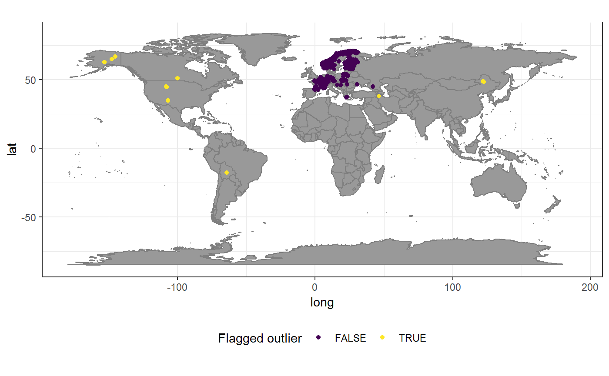
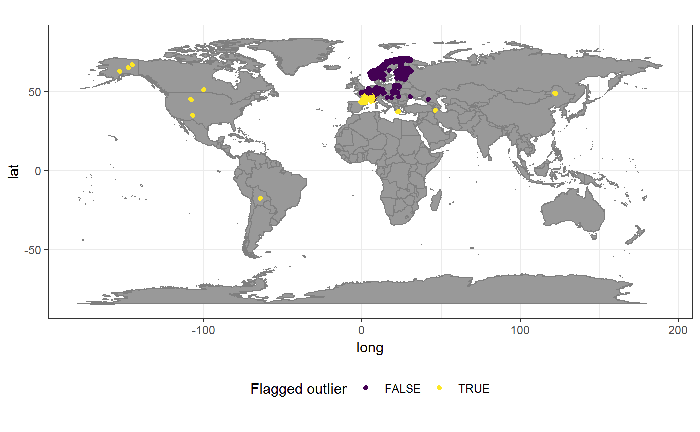

Identifying geographic outliers
Alex Zizka
11 August 2018
t_geographic_outliers.RmdThe problem of geographic outliers
Large geographic distances of an occurrence record to all other recordings of a taxon–i.e. geographic outliers–often are represent anthropogenic historic contingencies or indicated imprecise or erroneous geo-referencing, for instance due to switched latitude longitude or isolated observations from cultivated individuals. For many analyses such records are undesirable and need to be removed. However, the identification of such records is complicated because, since there are also natural examples of species with disjunct or satellite distributions (for instance on oceanic islands) and because outlier records might simply be due to uneven or gappy sampling. Furthermore it is difficult to define where a species range ends and when a record should be considered and outlier. Environmental factors can be used to inform a decision on geographic outliers, however, if records are used for environmental based distribution modelling after cleaning the is a high risk of circularity.
CoordinateCleaner implements a test (cc_outl) to identify outliers based on geographic position by using interquantile range outlier detection (\(x > IQR(x) + Q_{75} * mltpl\)) on a distance matrix of all records of a species. We will use distribution data of the Eurasian red squirrel and the European lynx as example to explore outlier detection in CordinateCleaner.
1. The case of the European lynx
The Eurasian lynx (Lynx lynx) is a wide-spread Eurasian carnivore species. Eurasia. The global Biodiversity Information Facility (www.gbif.org) comprises more than 214729 records for this species, the vast majority in Europe, few records from Asia and some records from North America and South America. While the European and Asian records correspond to the recent natural range of the species (compare for instance here), the American records are at least doubtful and might correspond to swapped coordinates, individuals in captivity or misidentification of the Canada lynx (Lynx canadensis). The species is an extreme case for outlier detection, because it includes potential true outliers (in the Americas), but also very isolated but potentially valid records (in northern China). We’ll see how cc_outl can help to improve the data set, and show an alternative to outlier detection for extreme cases. Since this is a large dataset, the test will automatically sub-sampling for the calculation of the distance matrix.
## #libraries
## library(CoordinateCleaner)
## library(rgbif)
## library(tidyverse)
## library(ggplot2)
## library(sp)
##
## # Load data from GBIF
## lnx <- rgbif::occ_search(scientificName = "Lynx lynx", limit = 200000)%>%
## select(species = specieskey, decimallongitude, decimallatitude, countrycode,
## hasCoordinate = T)
##
## # Run basic coordinate cleaning
flags <- clean_coordinates(x = lnx, tests = c("capitals",
"centroids", "equal", "gbif", "institutions","seas","zeros"))
## OGR data source with driver: ESRI Shapefile
## Source: "C:\Users\alexander.zizka\AppData\Local\Temp\RtmpOQJXHq", layer: "ne_50m_land"
## with 1420 features
## It has 3 fields
## Integer64 fields read as strings: scalerank
lnx <- lnx[flags$summary,]
# Default outlier detection
outl <- cc_outl(lnx, value = "flagged")
plo <- data.frame(lnx, outlier = as.factor(!outl))
# visualize occurrence records
ggplot()+
borders(fill = "grey60")+
geom_point(data = plo,
aes(x = decimallongitude, y = decimallatitude, col = outlier))+
scale_color_viridis(discrete = T, name = "Flagged outlier")+
coord_fixed()+
theme_bw()+
theme(legend.position = "bottom")
The default settings of the outlier test flagged 18 outliers. This is only a small number of records. A comparison with the natural range of the species shows that the American records were all flag correctly as outliers. However it also reveals some potential issues, since few isolated records in Asia where also flagged as potential outliers, although they are well within the natural range of the species and likely are valid records. There isolated position is probably rather due to low sampling and data availability across Asia. Some tweaking seems necessary to get the best representation of the distribution of the Eurasian lynx using. CoordinateCleaner offers three options to improve the results 1) change the sensitivity of cc_outl, 2) correct for sampling intensity and 3) drop the outlier test and use natural ranges via cc_iucn instead.
1) Changing test sensititvity
We can make the outlier detection more conservative using the mltpl argument of cc_outl. We’ll double mltpl to 10, meaning that the mean distance of any records to all other records (or in this case a sub sample of 1000 records) must be more than 10 times the interquantile range of the mean distance of all points
outl_10 <- cc_outl(lnx, value = "flagged", mltpl = 10)
plo <- data.frame(lnx, outlier = as.factor(!outl_10))
# visualize occurrence records
ggplot()+
borders(fill = "grey60")+
geom_point(data = plo,
aes(x = decimallongitude, y = decimallatitude, col = outlier))+
scale_color_viridis(discrete = T, name = "Flagged outlier")+
coord_fixed()+
theme_bw()+
theme(legend.position = "bottom")
This further improved the results and now only the two very isolated records in eastern Asia remain as false flags.
1.2 Correcting for sampling intensity
An alternative to changing test sensitivity is to account for the general sampling situation per country for the outlier test, with the assumption, that geographically isolated records in well sampled countries are more likely to be true outliers, and geographically isolated records in badly sampled countries are less likely to be true outliers. The sampling_cor argument of cc_outl, uses the total number of occurrence records available from the Global Biodiversity Information Facility (GBIF) as a proxy for sampling per country, and weights the mean distance to other to other records of each records by the logarithmic, area-normalized number of records in GBIF. Here we will use sampling_cor with a less sensitive mltpl value. This may take some time.
# Run outlier test
outl_samp<- cc_outl(lnx, value = "flagged", mltpl = 3, sampling_cor = T)
# visualize occurrence records
plo <- data.frame(lnx, outlier = as.factor(!outl_samp))
ggplot()+
borders(fill = "grey60")+
geom_point(data = plo,
aes(x = decimallongitude, y = decimallatitude, col = outlier))+
scale_color_viridis(discrete = T, name = "Flagged outlier")+
coord_fixed()+
theme_bw()+
theme(legend.position = "bottom")
1.3 Natural ranges instead of outlier detection
Cleaning geographic species occurrence data from outliers must be done carefully. The example of the Eurasian lynx showcased potential empirical problems (albeit in an extreme case) of outlier testing, mostly cause by biased sampling. In addition, it is also conceptually difficult to define outliers, since species can have disjunct distributions, the borders of species ranges are fuzzy, and single individuals might deviated drastically from the average species range. So, if for any analyses it is essential that the entire range of species is included, and records flagged by cc_outl cannot be verified, it is advisable to skip oilier testing and use species reference ranges to identify coordinate errors. Such reference ranges are for instance available for download for all species of amphibians, birds, mammals and reptiles from http://www.iucnredlist.org/technical-documents/spatial-data. These are very detailed and CoordinateCleaner implements a straight forward way to use these, or any other, ranges to flag records in the cc_iucn function. Since downloading the IUCN shapes requires log-in, and for demonstration, we will use a self-build range for the lynx natural range. This is only a rough approximation based on euclidean geometry, but will suffice for the purpose of cleaning this data.
# Create custom range polygon
## define the polygon shape
range <- Polygon(cbind(c(-10, -10, 50, 170, 138, 83, 36, 14, -10),
c(35, 67, 80, 69, 32, 21, 25, 35, 35)))
range <- Polygons(list(range), ID = c("A"))
## define projection
wgs84 <- "+proj=longlat +datum=WGS84 +no_defs +ellps=WGS84 +towgs84=0,0,0"
range <- SpatialPolygons(list(range), proj4string = CRS(wgs84))
# creat dataset species = species name, in this case the GBIF ID
df <- data.frame(species = c("2435240"), row.names = c("A"))
nat_range <- SpatialPolygonsDataFrame(range, data = as.data.frame(df))
# run natural range test
rang <- cc_iucn(x = lnx, range = nat_range, value = "flagged")
# plot results
plo <- data.frame(lnx, outlier = as.factor(!rang))
nat_range <- fortify(nat_range)
ggplot()+
borders(fill = "grey60")+
geom_polygon(data = nat_range, aes(x = long, y = lat), fill = "green", alpha = 0.5, col = "grey50")+
geom_point(data = plo,
aes(x = decimallongitude, y = decimallatitude, col = outlier))+
scale_color_viridis(discrete = T, name = "Flagged outlier")+
coord_fixed()+
theme_bw()+
theme(legend.position = "bottom")